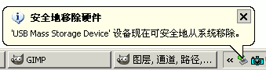

电脑操作基础
三十二、U盘使用和弹出 返回
U盘Mp3等移动磁盘，常常用来交换数据，使用的时候可以直接接到电脑上，用完后也可以方便地拔出来，下面我们来看一个练习；
1、插入U盘
1）U盘的插口是扁平的，里面有一个横板，上面是空的，插的时候如果机箱上的插槽是水平的，把空的那一面朝上插入插槽，如果正着插不进去，就反过来再试试；
2）插入U盘后，在下面任务栏的右下角系统托盘中，会出来一个绿色的图标，提示“发现新硬件”，这时候耐心等待即可，直到出现“新硬件已经可以使用”；
3）打开我的电脑，在下面的可移动存储设备中，可以找到一个新的“可移动磁盘”，这个就是U盘的盘符，可以打开进行文件的保存、复制等；
4）由于U盘很容易感染和传播病毒，因此使用前应该打开杀毒监控，一般关闭它的自动播放功能；
2、弹出U盘
1）拔出U盘前必须要先弹出，先关闭所有打开的U盘文件夹和文件，然后在右下角系统托盘那儿找到一个绿色的箭头图标；
2）瞄准这个绿箭头，点一下鼠标左键，弹出一个提示条“安全删除USB驱动器”；
3）把鼠标指针移到这个长条上，再点一下鼠标左键，出来提示“现在可以安全地从系统移除”，绿色的小箭头也消失，这时候就可以拔出U盘了；

本节学习了在WinXP中使用和弹出U盘的基本方法，如果你成功地完成了练习，请继续学习下一课内容；
本教程由86团学校TeliuTe制作|著作权所有
基础教程网：http://teliute.org/
美丽的校园……
转载和引用本站内容，请保留作者和本站链接。